chromium — 11 px dense table rows

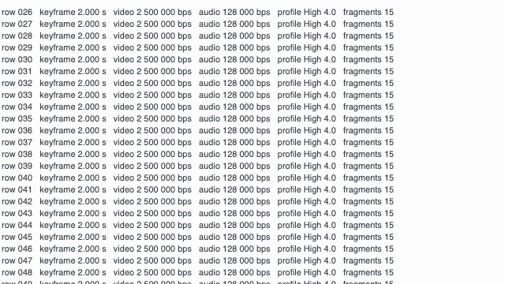
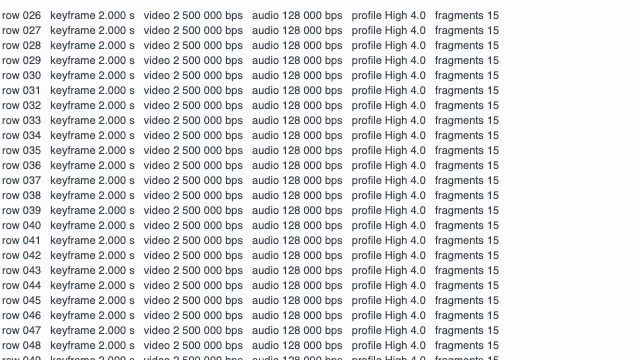
Real captures, 2026-09-21. Three browser engines recorded the same 30 s fixture — a page of 11 px prose beside a 12 px code listing, scrolling and then holding still — through the recorder's own option table. Every crop below is 1:1, 640×360, lifted from the decoded video and from the canvas frame it was drawn from.
| engine | case | video Mbps | of asked | profile | keyframes every | keyframes | 30 s file |
|---|---|---|---|---|---|---|---|
| chromium | camera-only, 2.0 Mbps asked | 1.64 | 82% | High L4.0 | 2.02 s | 15 | 6.5 MB |
| chromium | screen share, 2.5 Mbps asked | 2.34 | 94% | High L4.0 | 2.02 s | 15 | 9.1 MB |
| chromium | today, 8 Mbps asked, 200 ms keyframes | 7.28 | 91% | High L4.0 | 0.22 s | 138 | 27.7 MB |
| chrome | camera-only, 2.0 Mbps asked | 1.68 | 84% | High L4.0 | 2.02 s | 15 | 6.7 MB |
| chrome | screen share, 2.5 Mbps asked | 2.36 | 94% | High L4.0 | 2.02 s | 15 | 9.2 MB |
| chrome | today, 8 Mbps asked, 200 ms keyframes | 7.25 | 91% | High L4.0 | 0.22 s | 139 | 27.6 MB |
| webkit | camera-only, 2.0 Mbps asked | 2.47 | 123% | Constrained Baseline L4.0 | 1.04 s | 28 | 9.4 MB |
| webkit | screen share, 2.5 Mbps asked | 4.40 | 176% | Constrained Baseline L4.0 | 1.04 s | 28 | 16.4 MB |
| webkit | today, 8 Mbps asked, 200 ms keyframes | 12.60 | 158% | Constrained Baseline L4.0 | 1.03 s | 28 | 46.0 MB |
Chromium and Chrome honour the requested profile and the 2 s keyframe interval exactly. WebKit accepts the High-profile MIME string and then records Constrained Baseline anyway, ignores the keyframe lever and keeps its own ~1 s cadence, and overshoots the requested bitrate — but it still tracks the request downward, from 12.6 Mbps to 2.5–4.4 Mbps.
Seven moments per run where the page holds still for 1.5 s, compared against the exact canvas frame the browser was drawing. Higher PSNR and SSIM are closer to the source.
| engine | crop | PSNR new | PSNR today | SSIM new | SSIM today |
|---|---|---|---|---|---|
| chromium | 11 px prose | 36.61 | 37.39 | 0.9937 | 0.9954 |
| chromium | 11 px dense table rows | 36.37 | 36.96 | 0.9942 | 0.9952 |
| chromium | 12 px monospace code | 33.44 | 33.72 | 0.9662 | 0.9695 |
| chrome | 11 px prose | 36.67 | 37.01 | 0.9938 | 0.9946 |
| chrome | 11 px dense table rows | 36.44 | 37.05 | 0.9943 | 0.9953 |
| chrome | 12 px monospace code | 33.46 | 33.70 | 0.9666 | 0.9693 |
| webkit | 11 px prose | 38.02 | 39.58 | 0.9956 | 0.9973 |
| webkit | 11 px dense table rows | 38.12 | 39.41 | 0.9959 | 0.9972 |
| webkit | 12 px monospace code | 31.52 | 31.80 | 0.9617 | 0.9663 |
The new 2.5 Mbps capture lands within 0.3–1.6 dB and 0.002–0.005 SSIM of today's 8 Mbps capture on every text crop, for a third of the bytes. Look at the crops and judge it yourself.
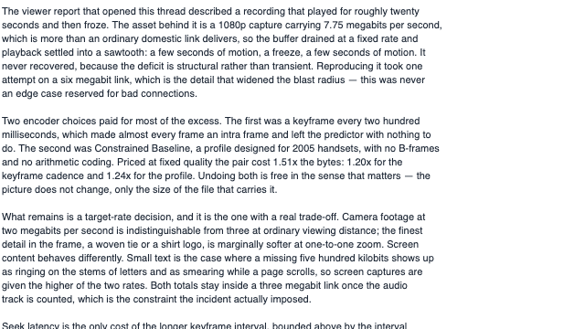
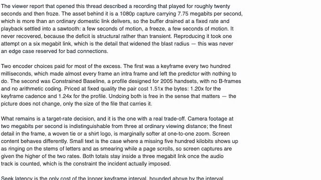
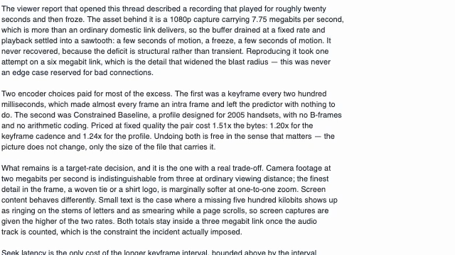



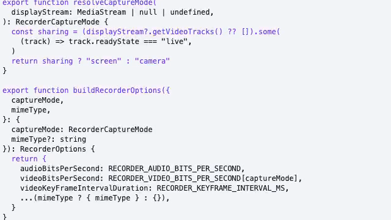
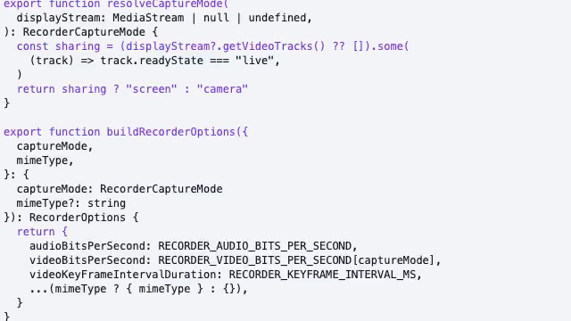

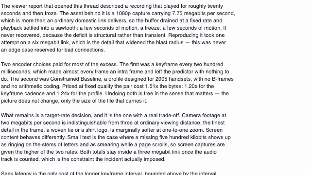
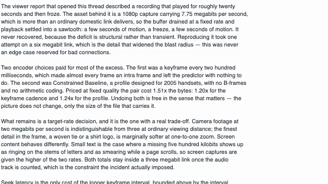
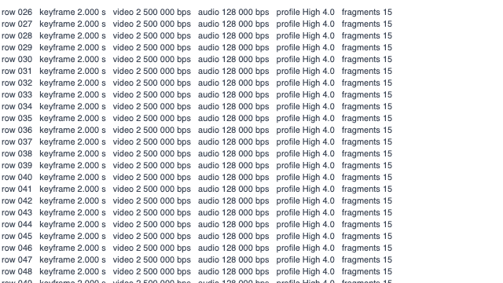
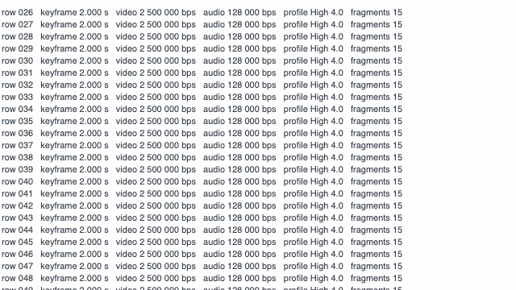
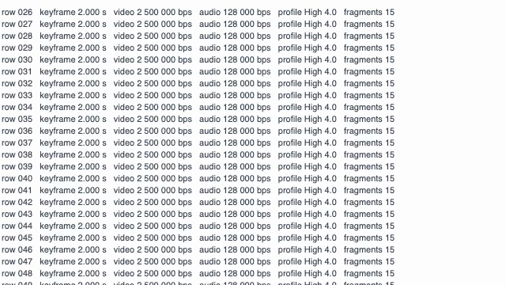
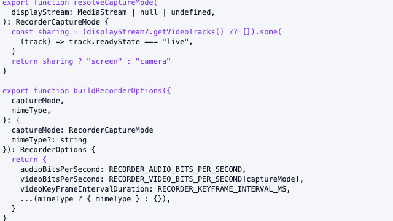
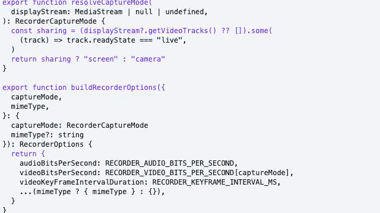
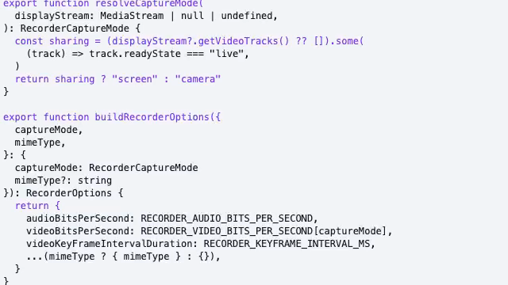
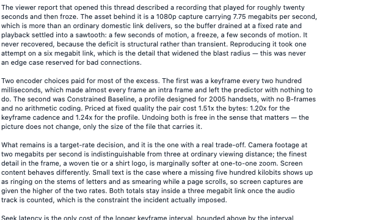
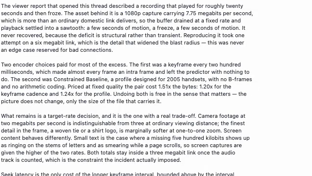
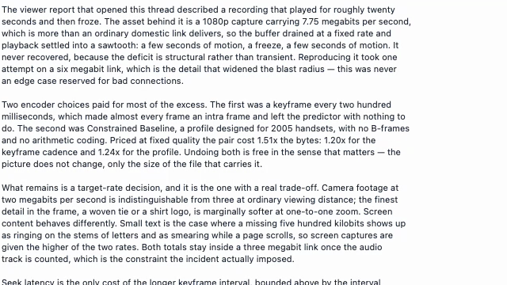
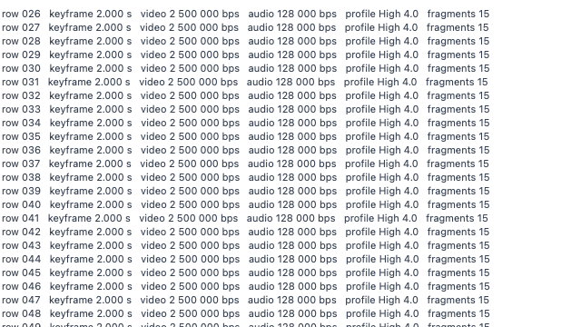
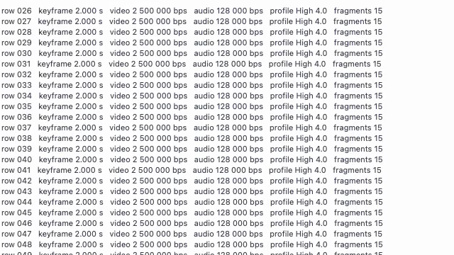
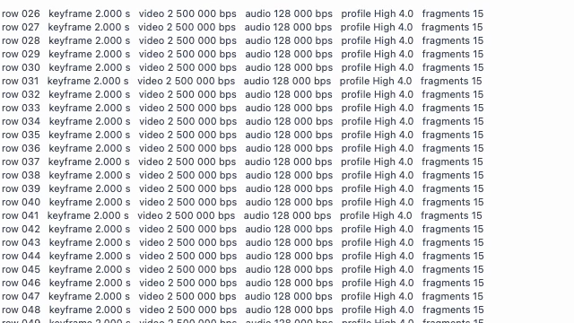
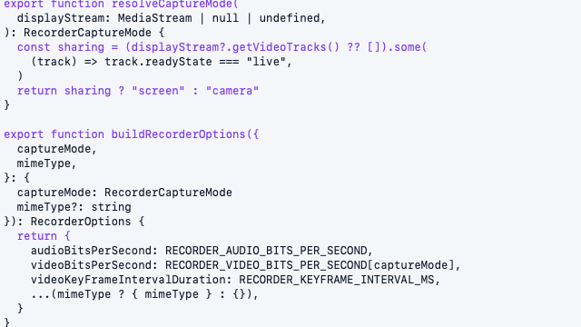
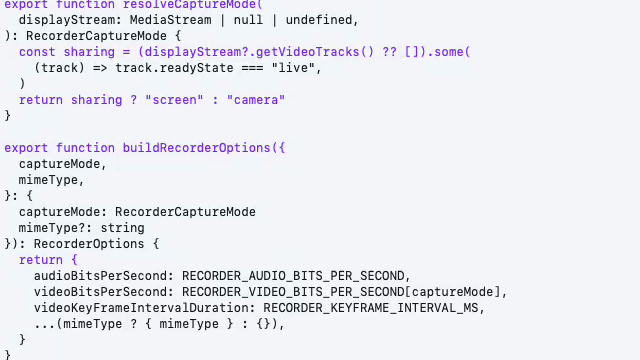
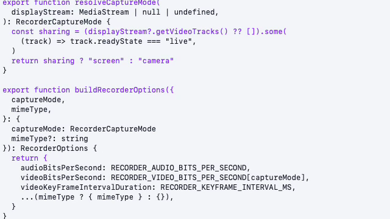
Text in motion, where a lower bitrate would smear if it were going to. These frames are not aligned to each other or to a source frame, so they carry no number — they are here to be looked at.
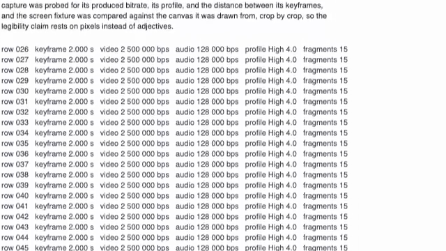
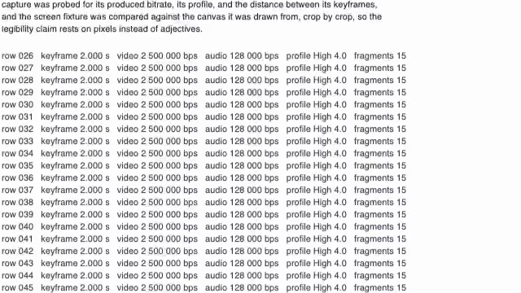
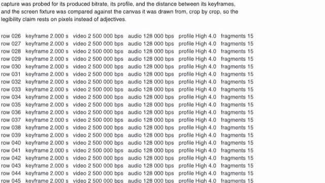
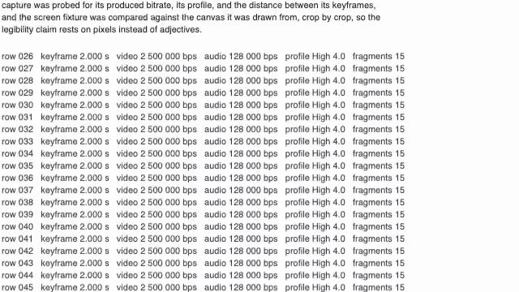
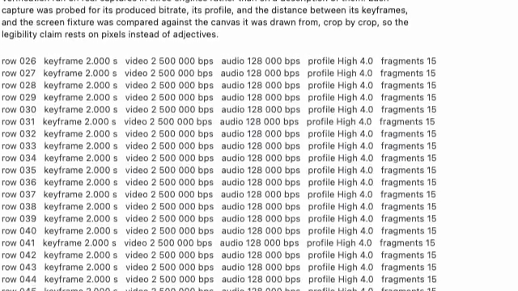
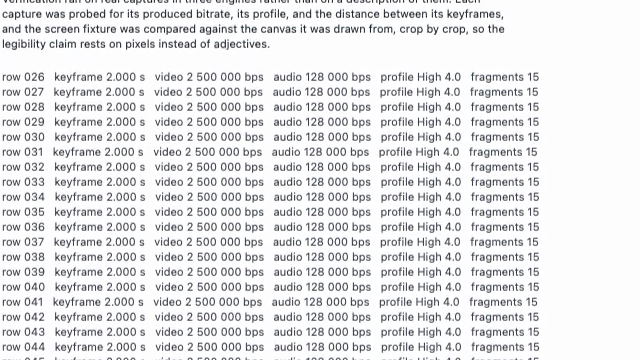